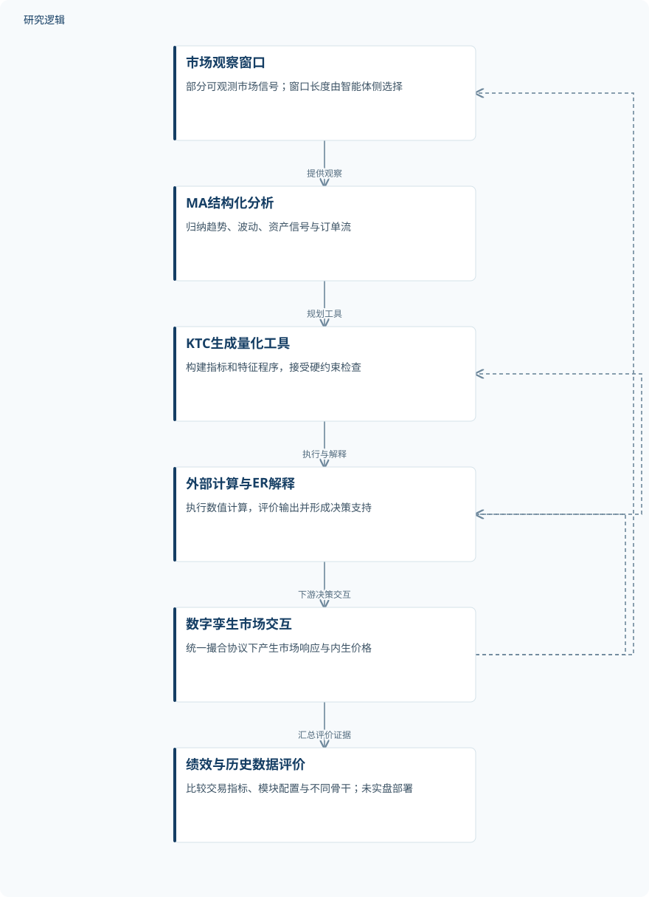
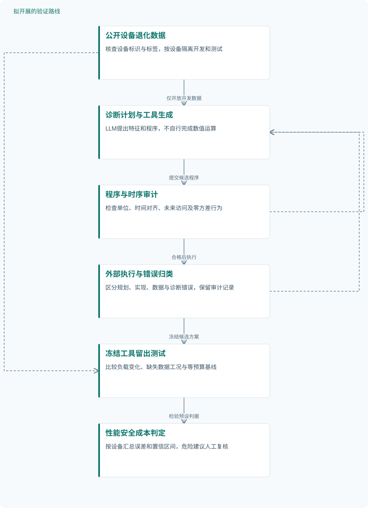

论文精读
通过数字孪生市场自博弈演化定量推理
Evolving Quantitative Reasoning through Self-Play in Digital Twin Markets
精读更新 2026-10-06 22:48 · 依据论文全文整理
让大模型解释市场，并不等于让它可靠地计算风险与收益。这篇论文将语义规划与数值执行分开：LLM生成、组织和解释量化工具，外部程序完成计算，再借助内生价格形成的数字孪生市场迭代修正。其阅读价值不仅在于交易绩效，更在于提出一种可检查的定量推理流程；但历史回测优势、工具正确性与真实部署可靠性，仍须分别讨论。
文章目录
从“会解释市场”到“能可靠计算”
金融决策中的数值错误会通过复利、非线性关系和阈值规则放大，流畅解释无法抵消错误计算。论文因此把研究对象从最终交易动作前移到量化工具：分析依据能否转化为可执行、可检查的中间产物，工具失效后又能否被修正。
固定工具库限制了分析方式，但自由生成代码也可能引入前视偏差和数值异常。本文尝试在两者之间建立受约束的探索空间；相关文献《Automate Strategy Finding with LLM in Quant Investment》的摘要已描述可执行因子生成与筛选，因此这里值得关注的是工具创建、市场反馈与有界迭代的组合，而非把工具生成本身视为全新技术。
三阶段工具闭环，参数不更新
DeMAgent依次执行市场分析MA、知识与工具创建KTC、评价与改进ER。MA形成结构化市场描述，KTC生成指标或特征程序，ER结合计算输出与市场响应修订工具；全部数值计算和统计估计交给工具，禁止自由文本计算。其定位是辅助决策模块，而非直接连接实盘的交易执行系统。
工具须满足语法、数值、因果、执行安全和接口约束，违反硬约束会导致执行失败。闭环调整推理轨迹、工具选择与决策抽象，不更新模型参数；这里的“自博弈”是绩效驱动的合成交互，不是经典对抗式强化学习。执行预算及工具保留阈值未报告，约束如何落实仍影响复现。
DECOUPLEDMARKET不回放历史价格，也不暴露日历信息，价格由参与者交互产生。式(5)采用Impact=κ·tanh(Δ/L)，再聚合交易价、成交量加权价和短期压力形成下一步参考价。不过，执行买卖量守恒与按执行量定义的非零净需求如何兼容尚待澄清，κ、窗口和聚合函数的具体配置也缺失。
原研究：市场反馈驱动的工具改进


展示已提出的方法与验证关系；迭代发生于工具和推理流程，不是LLM参数训练，也不是实盘部署。
下载 SVG图示关系说明
实线表示相邻阶段的信息流，虚线表示跨阶段联系或反馈。
市场观察窗口 → MA结构化分析：提供观察；MA结构化分析 → KTC生成量化工具：规划工具；KTC生成量化工具 → 外部计算与ER解释：执行与解释；外部计算与ER解释 → 数字孪生市场交互：下游决策交互；数字孪生市场交互 → 市场观察窗口：更新市场信号；数字孪生市场交互 → 外部计算与ER解释：反馈市场响应；外部计算与ER解释 → KTC生成量化工具：修订或替换工具；数字孪生市场交互 → 绩效与历史数据评价：汇总评价证据
合成市场、历史回测与模块消融
验证包括数字孪生交易比较、三个真实市场回测、模块消融和计算效率分析，没有实盘部署。历史资产共列出九项：美股AAPL、MSFT、NVDA，加密资产BTC、SOL、BNB，以及茅台、宁德时代、隆基绿能；前两类来自YAHOO FINANCE，后一类来自BAOSTOCK，使用日频OHLC、成交量与派生指标。
九项资产不是九次独立重复试验，API调用量也不是独立样本量。有效记录数、仿真重复、随机种子、增强数量及训练验证测试划分均未报告；正文与附录还对三个市场的评价日期给出不同对应关系。过去值前向填充和内生价格设计有助于减少部分泄漏路径，但不能证明预训练信息与评价期完全隔离。
基线覆盖传统技术策略、DDPG/PPO/A2C/TD3、独立LLM、StockSim和ArenaTrader；骨干比较保持外围接口与提示结构一致。消融比较无模块、仅MA、仅KTC、MA+KTC和完整模型，没有覆盖全部组合。指标包括总收益TR、胜率WR和SR，其中SR按日收益计算、无风险利率为零，未给年化因子。
| 验证任务 | 样本与规模 | 主要结果 |
|---|---|---|
| 数字孪生交易绩效及骨干比较 | 七种DeMAgent骨干属于配置数量；股票总数、智能体总数、独立仿真次数、种子、时长及增强数量未报告。 | 七种骨干TR均高于对应独立LLM；Gemini-3-Pro的TR为13.9459，正文解释为13.95%，SR为1.5952。 |
| 三个历史市场主比较及骨干敏感性 | 每市场列出三项资产，共九项；有效记录数、交易总数、独立运行数及增强数量未报告，资产不等于重复样本。 | GPT-5-mini配置三市场TR/SR为8.49/0.21、41.32/0.29、25.21/0.29；加密市场DeepSeek-V3.2的TR为26.9338。 |
| MA、KTC与ER模块消融 | 五种模块配置不是五个独立样本；各组独立运行、随机种子、交易数量及增强数量未报告。 | 完整模型三个市场均为本表最高TR和SR；加密市场仅KTC的TR为20.96，MA+KTC为17.30，完整模型为25.21。 |
| CSI智能体调用成本与延迟分析 | 五组API调用数为36、36、72、108、164；调用不是独立样本，决策总数及重复测量次数未报告。 | DeMAgent为164次调用、99.6%通过率、19.8 s、$0.098；独立GPT-5-mini为36次、100.0%、5.2 s、$0.022。 |
展开数据来源、分组、对照与验证边界
数字孪生交易绩效及骨干比较
数据来源。集中撮合的内生价格合成市场，不回放历史轨迹；股票配置包含初始价格、波动率和行业等属性。
分组与工况。比较传统策略、独立LLM、既有交易智能体与DeMAgent；Stock A/B/C轨迹属于代表性可视化，不另计实验。
数据划分。训练验证测试划分未报告；闭环不更新LLM参数，不能据此假定工具开发与评价已隔离。
对照与消融。Buy & Hold、ATR、RSI、ZMR、Bollinger Bands、SMA、MACD；对应独立LLM、StockSim及ArenaTrader。
评价指标。报告TR、平均日收益、日收益标准差、SR、WR和MD；SR无年化因子，MD表值符号与正文定义不一致。
验证边界。无重复统计或显著性检验；GPT-5-mini的SR由1.0490降至0.7553，收益增加不代表风险表现全面改善。
三个历史市场主比较及骨干敏感性
数据来源。美股与加密资产数据来自YAHOO FINANCE，中国股票来自BAOSTOCK；使用日频OHLC、成交量与派生指标。
分组与工况。NASDAQ：AAPL/MSFT/NVDA；CSI：茅台/宁德时代/隆基绿能；CRYPTOCURRENCY：BTC/SOL/BNB。
数据划分。正文依次对应2025-09-01至10-26、10-01至11-30、08-01至10-31；附录改为加密、美股、CSI对应上述窗口。训练验证划分未报告。
对照与消融。传统技术策略、DDPG/PPO/A2C/TD3、七种独立LLM、StockSim、ArenaTrader；另比较七种DeMAgent骨干。
评价指标。主表报告TR、WR、SR；扩展表增加平均收益、波动率、MD及CR。百分数单位未统一标注，MD符号存在异常。
验证边界。日期对应冲突、训练预算及交易成本未报告；部分骨干不及对应独立LLM，缺少误差统计，不能认定全面或显著领先。
MA、KTC与ER模块消融
数据来源。采用NASDAQ、CSI和CRYPTOCURRENCY历史基准；是否与主比较使用完全相同抽样及执行配置未报告。
分组与工况。GPT-5-mini下比较无模块、仅MA、仅KTC、MA+KTC、MA+KTC+ER；未设置单独ER、MA+ER或KTC+ER。
数据划分。训练验证测试划分未报告；主比较与消融部分无模块基线不同，不能默认两表具有完全相同评价条件。
对照与消融。使用本消融表的无模块GPT-5-mini及组件配置作对照，不以主比较中的GPT-5-mini数值替换。
评价指标。报告TR、WR、SR；未直接报告工具数值误差、生成成功率、信号稳定性或工具执行失败率。
验证边界。未覆盖全部模块组合，无法完整分离ER贡献及交互；无重复统计，CSI与加密市场基线跨表差异原因未报告。
CSI智能体调用成本与延迟分析
数据来源。CSI历史评价，效率窗口为2025年9月3日至10月31日；不同于交易绩效窗口，不能合并为同一测量。
分组与工况。独立GPT-5-mini、GPT-4.1-mini、StockSim/GPT-5-mini、ArenaTrader/GPT-5-mini、DeMAgent/GPT-5-mini。
数据划分。报告效率测量日期；训练验证划分未报告，延迟计时边界和重复测量方案亦未报告。
对照与消融。两种独立LLM及StockSim、ArenaTrader；没有单独隔离动态工具创建开销的消融配置。
评价指标。调用数、硬约束通过率、延迟s、总成本$及单次成本$；成功率分母与延迟汇总口径未报告。
验证边界。DeMAgent在所列组中调用、延迟与总成本最高；缺少分布和定价时点，通过率不能解释为盈利率或完整安全保证。
收益优势可见，可靠性证据仍不完整
数字孪生中，七种DeMAgent骨干的TR均超过对应独立LLM，Gemini-3-Pro达到正文所述13.95%总收益和1.60的SR，但风险调整收益并非全部改善。历史主比较中，GPT-5-mini配置在三个市场的TR为8.49、41.32、25.21；扩展骨干表中，加密市场最高TR则属于DeepSeek-V3.2的26.9338。
完整模型在消融表中取得三个市场最高TR和SR，但加密市场MA+KTC的TR低于仅KTC，说明组合并非单调增益。缺少重复统计与完整组合，尚不足以强力支持作者关于机制因果作用的总结；主比较和消融的部分基线数值不同，也不能跨表直接归因。
复现还受到具体报告问题限制：图6中AMVR动态窗口公式与代码的sigmoid符号相反，MD非负定义与负值表项不一致，未解析的“??”交叉引用影响证据定位。CSI效率分析报告99.6%的硬约束通过率、19.8 s延迟和$0.098总成本，前者不是盈利率。现有结果支持有限场景下的绩效潜力，尚不能等同于长期稳健性或完整交易安全。
从这篇论文走向下一项研究
以下为结合研究方向提出的候选方案，实验设计与预期目标有待验证。
面向预测维护的可审计工具生成闭环
问题与短板。原研究以交易绩效间接评价工具，却缺少数值正确性和失败来源的直接测量。迁移至预测维护时，应先检验工具能否忠实处理设备历史，再讨论维护收益；不能把交易结论当作运维有效性证据。
改进机制。让LLM提出诊断计划及特征程序，由外部计算器执行；增加单位检查、时间对齐、零方差测试和未来数据访问屏蔽。将失败分为规划、实现、数据与诊断四类，仅允许通过验证的工具进入候选库。
候选创新。候选创新是把有界工具迭代与故障证据链结合，而非自称首次生成工具。Agent Planning Benchmark摘要强调规划与执行的分离诊断，可借鉴其思路，但须重新定义适用于运维的故障类别。
数据与实验设计。建议设计：先选有设备标识和退化标签的公开运行至失效数据，按设备隔离开发、验证和测试，目标至少30个独立测试设备。设置平稳、负载变化及缺失数据工况；窗口增强不计独立设备，不足数量时如实缩小设计。
对照与消融。比较固定特征模型、固定工具LLM、无审计动态工具和完整方案；消融单位检查、时间检查及反馈修订。统一骨干、调用预算和输入窗口，分别报告诊断性能与程序错误，避免仅用终端成绩解释机制。
成功判据。预先规定故障检测F1、寿命预测误差、非法工具率、延迟和成本；按设备计算置信区间。建议成功判据为预算相同时减少工具错误且不损害测试性能，任何危险建议均须人工复核。
风险与替代方案。公开数据可能缺少真实维护决策与成本，不能据此宣称经济收益。先开展离线诊断和工具审计；若动态生成不稳定，退回受验证算子组合，现场数据需另行采集，不假定已有传感器或运维平台。
疲劳可靠性计算中的约束验证与有界改进
问题与短板。原研究暴露的公式代码不一致及风险口径差异，在疲劳寿命计算中可能转化为非保守判断。后续应先回答生成程序是否忠实实现给定模型，再检验迭代能否改善载荷变化下的可靠性估计。
改进机制。让LLM规划载荷处理、损伤累计和不确定性传播，外部程序执行计算。对量纲、载荷顺序、模型适用范围和参数来源建立约束，并用解析算例和数值参考解反馈，不以语言自评替代计算正确性。
候选创新。候选创新是将工具自适应与参考方法审计、保守性检查组合。Beyond Execution的摘要提出用结构化约束核查实验忠实性；这里借鉴审计原则，疲劳领域约束及验证流程属于拟议设计。
数据与实验设计。建议设计：选择公开且参数可追溯的疲劳试验资料，目标至少30个独立试件，按材料或载荷谱留出测试。另建恒幅、变幅和过载数值算例；试件、仿真及重采样分别计数，缺失参数需补充采集。
对照与消融。比较固定损伤计算、固定工具LLM和动态工具方案；消融量纲检查、参考解校验及反馈修订。统一输入、执行预算与参数估计方法，禁止用测试试件调整工具，避免把模型差异混入工具机制效应。
成功判据。同时报告寿命误差、非保守预测比例、失效概率误差及计算成本，按独立试件汇总不确定性。建议成功判据为保持参考模型一致性，并在留出载荷谱上减少非保守错误，而非仅降低平均误差。
风险与替代方案。疲劳模型偏差可能大于程序误差，计算通过不代表物理有效。若公开数据无法支持可靠性参数估计，先限定为确定性算例；涉及新材料或现场载荷时需补充试验，最终工程判断保留专家审核。
拟议路线：预测维护工具的分层审计


对应第一条研究建议；所有节点为拟议流程，性能改善须通过设备隔离测试确认。
下载 SVG图示关系说明
实线表示相邻阶段的信息流，虚线表示跨阶段联系或反馈。
公开设备退化数据 → 诊断计划与工具生成：仅开放开发数据；诊断计划与工具生成 → 程序与时序审计：提交候选程序；程序与时序审计 → 外部执行与错误归类：合格后执行；程序与时序审计 → 诊断计划与工具生成：失败约束反馈；外部执行与错误归类 → 诊断计划与工具生成：开发期有界修订；外部执行与错误归类 → 冻结工具留出测试：冻结候选方案；公开设备退化数据 → 冻结工具留出测试：提供隔离测试设备；冻结工具留出测试 → 性能安全成本判定：检验预设判据